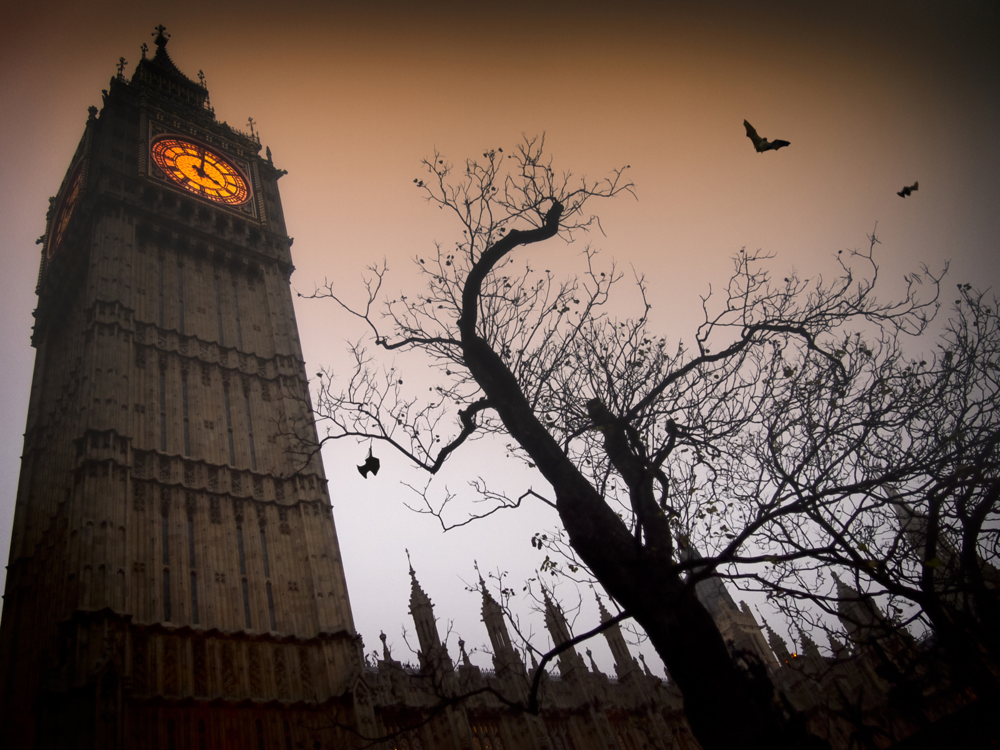
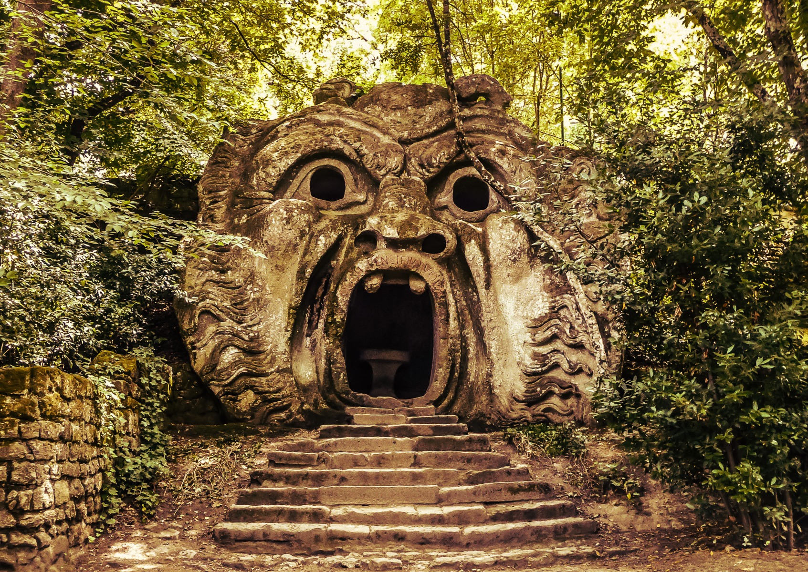
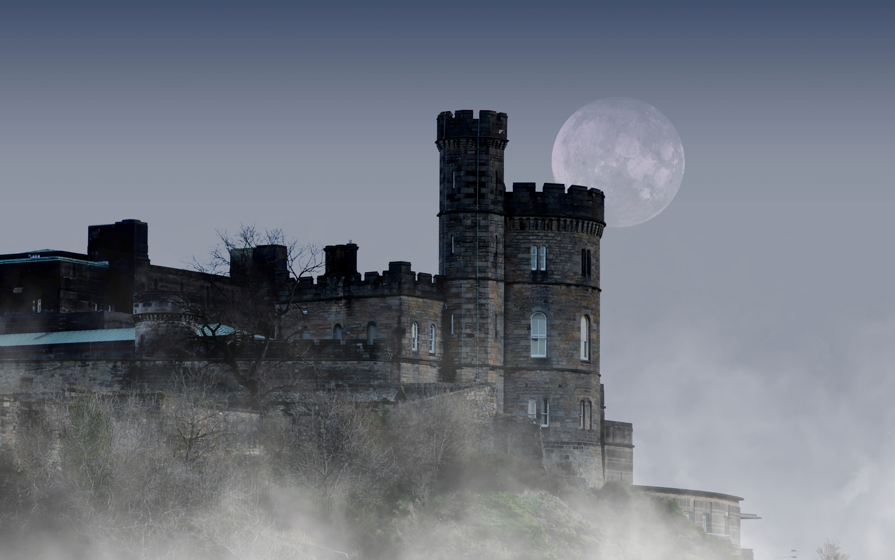
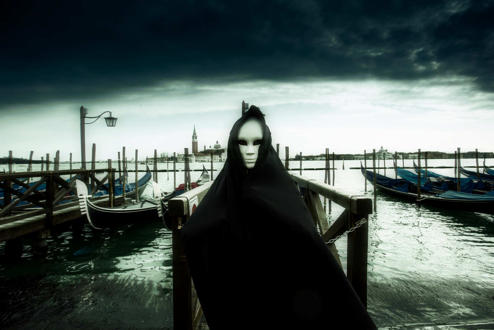

Amsterdam is not only canals, shops or coffee shops, it is also
in recent years the perfect destination for Halloween. Amsterdam
loves it so much that they celebrate it for three days at the
Halloween Festival Amsterdam. Book your hotel room at the best price,
It might not be haunted!. We have also selected the best things
to do during your stay in Amsterdam.

2. London,UK
London is the scariest place to be on Halloween. This year the ghosts
of the most famous serial killers are coming in London to welcome you.
Book your hotel in the streets of East London, in the Whitechapel area
where you will see the ghost of Jack the Riper. Walk through the darkest
anf foggiest streets of the city that never sleeps and prepare yourself
for the scariest Halloween in London.

3. Monsters park,Italy
The monsters park in Italy is a huge park, an extravagant one, symbol
of the Italian Renaissance. The story of the park is murky and historians
fail to agree on its origin or the meaning of the statues representing
monsters. You can find them everywhere in the park. We invite the most
adventurous ones to cross the Ogre’s gate also called the gate to Hell
and discover the dark side of your personality.

4. Edinburgh,Scotland
Edinburgh is a wonderful destination for a city trip with friends or
with family at Halloween. Enjoy a night break, surrounded by Zombies
and Vampires who feel at home in this medieval city.
Celebrate Halloween at Edinburgh Castle, visit the city in the light
of lanterns ... there are dozens of events in Edinburgh to make your
stay as scary as possible, so book your hotel in Edinburgh at the best
price and book your activities for example a visit to the Edinburgh
Castle or to the Loch Ness, to Glencoe in the Highlands.

5. Venice,Italy
What is there behind that mask?
When night falls, when fog invades the city and boaters have gone
back home, when the pigeons have left St. Mark's Square, Venice
shows another face, that of a scary city where beings are all
dressed in black and wander in the streets. Come discover them
and be swept away by the wave of terror of one of the scariest
European destinations for Halloween. Book your haunted hotel in
Venice and offer you extras from our selection of the best activities in Venice.